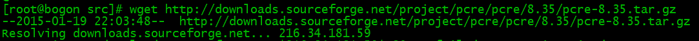
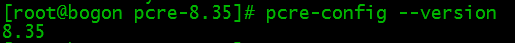
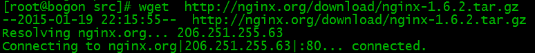
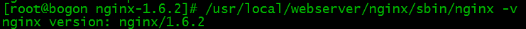
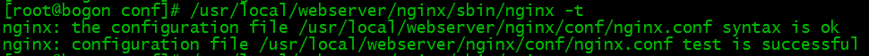
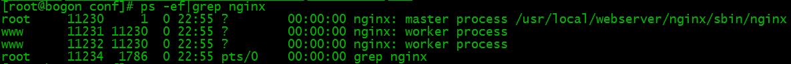
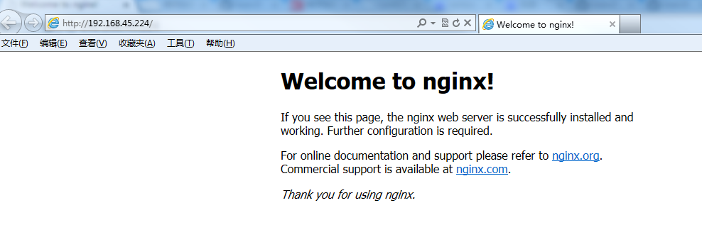

Nginx Installation and Configuration
Nginx ("engine x") is a high-performance Web and reverse proxy server developed by Russian programmer Igor Sysoev. It is also an IMAP/POP3/SMTP proxy server.
In cases of high concurrency connections, Nginx is a good replacement for Apache server.
Nginx Installation
System platform: CentOS release 6.6 (Final) 64-bit.
1. Install compilation tools and library files
yum -y install make zlib zlib-devel gcc-c++ libtool openssl openssl-devel
2. First install PCRE
PCRE's role is to enable Nginx to support the Rewrite feature.
1. Download the PCRE installation package, download address:http://downloads.sourceforge.net/project/pcre/pcre/8.35/pcre-8.35.tar.gz
[root@bogon src]# cd /usr/local/src/ [root@bogon src]# wget http://downloads.sourceforge.net/project/pcre/pcre/8.35/pcre-8.35.tar.gz

2. Extract the installation package:
[root@bogon src]# tar zxvf pcre-8.35.tar.gz
3. Enter the installation package directory
[root@bogon src]# cd pcre-8.35
4. Compile and install
[root@bogon pcre-8.35]# ./configure [root@bogon pcre-8.35]# make && make install
5. Check pcre version
[root@bogon pcre-8.35]# pcre-config --version

Install Nginx
1. Download Nginx, download address:https://nginx.org/en/download.html
[root@bogon src]# cd /usr/local/src/ [root@bogon src]# wget http://nginx.org/download/nginx-1.6.2.tar.gz

2. Extract the installation package[root@bogon src]# tar zxvf nginx-1.6.2.tar.gz
3. Enter the installation package directory
[root@bogon src]# cd nginx-1.6.2
4. Compile and install
[root@bogon nginx-1.6.2]# ./configure --prefix=/usr/local/webserver/nginx --with-http_stub_status_module --with-http_ssl_module --with-pcre=/usr/local/src/pcre-8.35 [root@bogon nginx-1.6.2]# make [root@bogon nginx-1.6.2]# make install
5. Check nginx version
[root@bogon nginx-1.6.2]# /usr/local/webserver/nginx/sbin/nginx -v

At this point, nginx installation is complete.
Nginx Configuration
Create the user www used by Nginx to run:
[root@bogon conf]# /usr/sbin/groupadd www [root@bogon conf]# /usr/sbin/useradd -g www www
Configure nginx.conf, replace /usr/local/webserver/nginx/conf/nginx.conf with the following content:
[root@bogon conf]# cat /usr/local/webserver/nginx/conf/nginx.conf
user www www;
worker_processes 2; #设置值和CPU核心数一致
error_log /usr/local/webserver/nginx/logs/nginx_error.log crit; #日志位置和日志级别
pid /usr/local/webserver/nginx/nginx.pid;
#Specifies the value for maximum file descriptors that can be opened by this process.
worker_rlimit_nofile 65535;
events
{
use epoll;
worker_connections 65535;
}
http
{
include mime.types;
default_type application/octet-stream;
log_format main '$remote_addr - $remote_user [$time_local] "$request" '
'$status $body_bytes_sent "$http_referer" '
'"$http_user_agent" $http_x_forwarded_for';
#charset gb2312;
server_names_hash_bucket_size 128;
client_header_buffer_size 32k;
large_client_header_buffers 4 32k;
client_max_body_size 8m;
sendfile on;
tcp_nopush on;
keepalive_timeout 60;
tcp_nodelay on;
fastcgi_connect_timeout 300;
fastcgi_send_timeout 300;
fastcgi_read_timeout 300;
fastcgi_buffer_size 64k;
fastcgi_buffers 4 64k;
fastcgi_busy_buffers_size 128k;
fastcgi_temp_file_write_size 128k;
gzip on;
gzip_min_length 1k;
gzip_buffers 4 16k;
gzip_http_version 1.0;
gzip_comp_level 2;
gzip_types text/plain application/x-javascript text/css application/xml;
gzip_vary on;
#limit_zone crawler $binary_remote_addr 10m;
#下面是server虚拟主机的配置
server
{
listen 80;#监听端口
server_name localhost;#域名
index index.html index.htm index.php;
root /usr/local/webserver/nginx/html;#站点目录
location ~ .*\.(php|php5)?$
{
#fastcgi_pass unix:/tmp/php-cgi.sock;
fastcgi_pass 127.0.0.1:9000;
fastcgi_index index.php;
include fastcgi.conf;
}
location ~ .*\.(gif|jpg|jpeg|png|bmp|swf|ico)$
{
expires 30d;
# access_log off;
}
location ~ .*\.(js|css)?$
{
expires 15d;
# access_log off;
}
access_log off;
}
}
Command to check the correctness of the configuration file nginx.conf:
[root@bogon conf]# /usr/local/webserver/nginx/sbin/nginx -t

Start Nginx
The Nginx startup command is as follows:
[root@bogon conf]# /usr/local/webserver/nginx/sbin/nginx

Access the Site
Access the configured site IP from a browser:

Other Nginx Commands
The following are several commonly used Nginx commands:
/usr/local/webserver/nginx/sbin/nginx -s reload # 重新载入配置文件 /usr/local/webserver/nginx/sbin/nginx -s reopen # 重启 Nginx /usr/local/webserver/nginx/sbin/nginx -s stop # 停止 NginxOther Extensions
Three-Good Youth
450***506@qq.com
worker_processesIt is best to set this parameter toautoautomatically match the number of processes.
Syntax:
auto is supported starting from versions after nginx 1.3.8 and 1.2.5.
Default:
proxy_next_upstreamThis parameter defaults to resending on both timeout and error. For connections with long request times, it is best to set it to resend only on error, otherwise it may cause duplicate data.
Three-Good Youth
450***506@qq.com
alexanderonepills
840***717@qq.com
Reference address
Error prompted when nginx starts:
Solution:
64-bit system:
32-bit system:
/usr/local/lib/libpcre.so.1 is the file address after prce installation.
For lower versions of prce, the corresponding libpcre.so.1 is libpcre.so.0.
alexanderonepills
840***717@qq.com
Reference address
Anonymous
gra***ang@fibocom.com
About URI Truncation
root and alias in location
Example 1: root
#------------目录结构---------- /www/x1/index.html /www/x2/index.html #--------配置----------------------- index index.html index.php; location /x/ { root "/www/"; } #-------访问-------------- curl http://localhost/x1/index.html curl http://localhost/x2/index.htmlExample 2: alias
#----------配置----------------- location /y/z/ { alias /www/x1/; } #---------访问-------------- curl http://localhost/y/z/index.htmlThe uri in proxy_pass in location
If the url of proxy_pass does not include a uri
If the tail is "/", the matched URI will be truncated
If the tail is not "/", the matched URI will not be truncated
If the url of proxy_pass includes a uri, the matched URI will be truncated
Example:
#-------servers配置-------------------- location / { echo $uri #回显请求的uri } #--------proxy_pass配置--------------------- location /t1/ { proxy_pass http://servers; } #正常，不截断 location /t2/ { proxy_pass http://servers/; } #正常，截断 location /t3 { proxy_pass http://servers; } #正常，不截断 location /t4 { proxy_pass http://servers/; } #正常，截断 location /t5/ { proxy_pass http://servers/test/; } #正常，截断 location /t6/ { proxy_pass http://servers/test; } #缺"/"，截断 location /t7 { proxy_pass http://servers/test/; } #含"//"，截断 location /t8 { proxy_pass http://servers/test; } #正常，截断 #---------访问---------------------- for i in $(seq 6) do url=http://localhost/t$i/doc/index.html echo "-----------$url-----------" curl url done #--------结果--------------------------- ----------http://localhost:8080/t1/doc/index.html------------ /t1/doc/index.html ----------http://localhost:8080/t2/doc/index.html------------ /doc/index.html ----------http://localhost:8080/t3/doc/index.html------------ /t3/doc/index.html ----------http://localhost:8080/t4/doc/index.html------------ /doc/index.html ----------http://localhost:8080/t5/doc/index.html------------ /test/doc/index.html ----------http://localhost:8080/t6/doc/index.html------------ /testdoc/index.html ----------http://localhost:8080/t7/doc/index.html------------ /test//doc/index.html ----------http://localhost:8080/t8/doc/index.html------------ /test/doc/index.htmlAnonymous
gra***ang@fibocom.com
Rls
892***40967@qq.com
Reference address
Nginx configuration file structure
The default nginx configuration file nginx.conf is as follows:
#user nobody; worker_processes 1; #error_log logs/error.log; #error_log logs/error.log notice; #error_log logs/error.log info; #pid logs/nginx.pid; events { worker_connections 1024; } http { include mime.types; default_type application/octet-stream; #log_format main '$remote_addr - $remote_user [$time_local] "$request" ' # '$status $body_bytes_sent "$http_referer" ' # '"$http_user_agent" "$http_x_forwarded_for"'; #access_log logs/access.log main; sendfile on; #tcp_nopush on; #keepalive_timeout 0; keepalive_timeout 65; #gzip on; server { listen 80; server_name localhost; #charset koi8-r; #access_log logs/host.access.log main; location / { root html; index index.html index.htm; } #error_page 404 /404.html; # redirect server error pages to the static page /50x.html # error_page 500 502 503 504 /50x.html; location = /50x.html { root html; } # proxy the PHP scripts to Apache listening on 127.0.0.1:80 # #location ~ \.php$ { # proxy_pass http://127.0.0.1; #} # pass the PHP scripts to FastCGI server listening on 127.0.0.1:9000 # #location ~ \.php$ { # root html; # fastcgi_pass 127.0.0.1:9000; # fastcgi_index index.php; # fastcgi_param SCRIPT_FILENAME /scripts$fastcgi_script_name; # include fastcgi_params; #} # deny access to .htaccess files, if Apache's document root # concurs with nginx's one # #location ~ /\.ht { # deny all; #} } # another virtual host using mix of IP-, name-, and port-based configuration # #server { # listen 8000; # listen somename:8080; # server_name somename alias another.alias; # location / { # root html; # index index.html index.htm; # } #} # HTTPS server # #server { # listen 443 ssl; # server_name localhost; # ssl_certificate cert.pem; # ssl_certificate_key cert.key; # ssl_session_cache shared:SSL:1m; # ssl_session_timeout 5m; # ssl_ciphers HIGH:!aNULL:!MD5; # ssl_prefer_server_ciphers on; # location / { # root html; # index index.html index.htm; # } #} }nginx file structure
... #全局块 events { #events块 ... } http #http块 { ... #http全局块 server #server块 { ... #server全局块 location [PATTERN] #location块 { ... } location [PATTERN] { ... } } server { ... } ... #http全局块 }Below is a configuration file for your understanding.
########### 每个指令必须有分号结束。################# #user administrator administrators; #配置用户或者组，默认为nobody nobody。 #worker_processes 2; #允许生成的进程数，默认为1 #pid /nginx/pid/nginx.pid; #指定nginx进程运行文件存放地址 error_log log/error.log debug; #制定日志路径，级别。这个设置可以放入全局块，http块，server块，级别以此为：debug|info|notice|warn|error|crit|alert|emerg events { accept_mutex on; #设置网路连接序列化，防止惊群现象发生，默认为on multi_accept on; #设置一个进程是否同时接受多个网络连接，默认为off #use epoll; #事件驱动模型，select|poll|kqueue|epoll|resig|/dev/poll|eventport worker_connections 1024; #最大连接数，默认为512 } http { include mime.types; #文件扩展名与文件类型映射表 default_type application/octet-stream; #默认文件类型，默认为text/plain #access_log off; #取消服务日志 log_format myFormat '$remote_addr–$remote_user [$time_local] $request $status $body_bytes_sent $http_referer $http_user_agent $http_x_forwarded_for'; #自定义格式 access_log log/access.log myFormat; #combined为日志格式的默认值 sendfile on; #允许sendfile方式传输文件，默认为off，可以在http块，server块，location块。 sendfile_max_chunk 100k; #每个进程每次调用传输数量不能大于设定的值，默认为0，即不设上限。 keepalive_timeout 65; #连接超时时间，默认为75s，可以在http，server，location块。 upstream mysvr { server 127.0.0.1:7878; server 192.168.10.121:3333 backup; #热备 } error_page 404 https://www.baidu.com; #错误页 server { keepalive_requests 120; #单连接请求上限次数。 listen 4545; #监听端口 server_name 127.0.0.1; #监听地址 location ~*^.+$ { #请求的url过滤，正则匹配，~为区分大小写，~*为不区分大小写。 #root path; #根目录 #index vv.txt; #设置默认页 proxy_pass http://mysvr; #请求转向mysvr 定义的服务器列表 deny 127.0.0.1; #拒绝的ip allow 172.18.5.54; #允许的ip } } }The above is the basic nginx configuration. Points to note are as follows:
1. Several common configuration items:
2. Thundering herd phenomenon: when a network connection arrives, multiple sleeping processes are woken up at the same time, but only one process can obtain the connection, which affects system performance.
3. Each directive must end with a semicolon.
Rls
892***40967@qq.com
Reference address